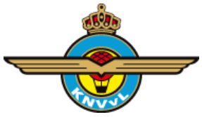

Modelvliegen, jouw hobby?
Hebben vliegtuigen ook jouw interesse? Zou jij het ook wat vinden om zelf prachtige modellen te bouwen en er zelfs mee te vliegen? Dan moet je eens komen kijken bij de Arnhemse Luchtvaart Club (ALC) een vereniging waarvan de leden zich bezighouden met deze activiteiten.
De Club
De Arnhemse Luchtvaartclub heeft leden, verdeeld over alle leeftijdscategorieën, die allemaal één ding gemeen hebben, hun liefde voor het bouwen van en vliegen met modelvliegtuigen.
De ALC is één van de weinige modelvliegclubs in Nederland die in het bezit van een eigen bouwruimte. Het clubgebouw is gevestigd in de binnenstad van Arnhem, in Spelzaal de Rietebeek, in de Blekerstraat. Hier zijn alle gereedschappen en materialen aanwezig, die nodig zijn om modelvliegtuigen te kunnen bouwen. Afhankelijk van je bouw-ervaring, bepaal je zelf wat voor model je wilt bouwen, vanaf een tekening of met een bouwdoos, dat maakt niet uit! In alle klassen zijn verschillende beginners- en gevorderden modellen voor handen.
Actieve leden met veel ervaring helpen en begeleiden nieuwe leden om ervoor te zorgen dat je eerste model ook echt vliegt.
Activiteiten
Naast de bouwavonden op dinsdag en vrijdag, gaan we ook regelmatig vliegen op het Rozendaalse Veld, bij de boer of we gaan naar wedstrijden. Ervaren leden van onze club geven les wat je moet doen om goed te leren vliegen. Behalve bouwen en vliegen hebben we nog andere activiteiten. Ook maken we uitstapjes om helling te vliegen in de Eifel, of aan de kust bij de Maasvlakte 2.
Verder zullen we in de loop van het jaar met een groepje naar andere plaatsen gaan, om deel te nemen aan wedstrijden, (Wakefield, F3B, F3F, F5J enz) beurzen bezichtigen en ook om te vliegen in omstandigheden die we in Nederland niet hebben. We spelen in op nieuwe disciplines zoals bijvoorbeeld nu het RES (Rudder, Elevator, Spoiler) vliegen. Dit zijn modelzwevers met een spanwijdte van 2 meter, maar zo licht mogelijk gebouwd om onder minimale windsterkte te kunnen vliegen.
Lidmaatschap 
Tevens kennen wij het huisgenootlidmaatschap. Dit houdt in, wanneer er uit een gezin meerdere mensen lid worden van de vereniging, de oudste de volle contributie betaald en de volgende 50%. Jeugdleden betalen een gereduceerd bedrag.
Bouwkosten
De kosten voor de materialen variëren van een paar euro voor een eenvoudig werpmodel tot ….
Voor radiobesturing heb je behalve het vliegtuig ook een zender, een ontvanger, servo’s en accu’s nodig. Bij beginners helpen we je met de eerste aanzet, ook met deze apparatuur totdat je zelf een keuze gemaakt hebt wat je zelf wilt aanschaffen.
Loop eens binnen op de club, kom een kopje koffie drinken en kijk of er iets is wat je leuk vindt om te gaan doen.